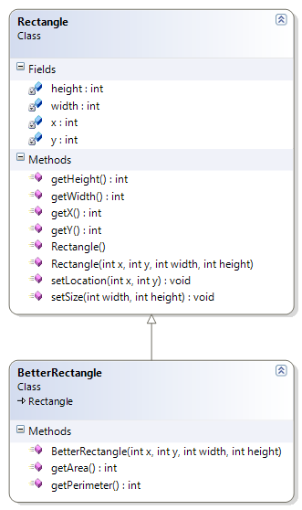

In class you learned how to
add features to a class by extending it; this
is called inheritance. For this exercise, you're going
to create a new version of the Rectangle
class you'll find in your Week05 folder.
Notice that this class is already compiled. You won't be able
to look at the source code.
Your new
BetterRectangle subclass should extend
the Rectangle class and add:
- a constructor that takes 4 parameters,
x,y,widthandheightas shown in the UML digram to the right. - an accessor method,
getPerimeter()that returns the perimter of the rectangle. - an accessor method,
getArea()that returns the area of the rectangle.
Do NOT add any instance variables to your new
subclass. Instead, use the mutator methods, setLocation()
and setSize() to initialize the superclass instance variables
in Rectangle.
In a similar manner, use the inherited accessor
methods, getWidth() and getHeight() to calculate
the area and the perimeter in your subclass methods.